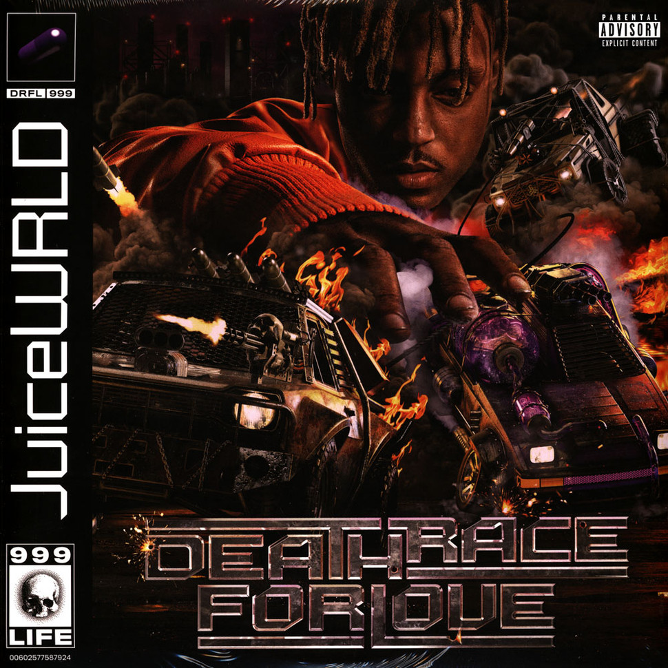

Ik heb verschillende hobby's. Hierbij een opsomming:
- Voetbal
- Muziek luisteren
- Gamen
- Netflix en YouTube
- Chillen met de homies
Hiervan doe ik het liefst muziek luisteren en gamen. Dat muziek luisteren merk je wel als je me beter kent ;) Natuurlijk doe ik men andere hobby's ook graag en ze combineren is zeker fijn. Een perfect voorbeeld daarvan is gaan voetballen met men vrienden en ondertussen muziek afspelen.
Dat zijn de beste vibes dat ik kan hebben!!!
